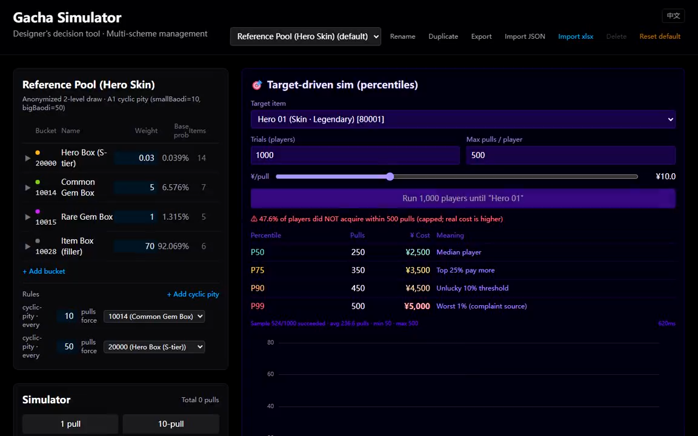

Solo · Live Tool · For Numerical Designers独立 · 在线工具 · 面向数值策划
Gacha Economy Sim
React · TypeScript · Monte Carlo · Web Worker
A designer-facing tool for exploring how pool weights and pity rules change the cost of acquiring a target item. I built the draw engine, rule interface and simulation UI so a configuration can be edited, simulated and compared in one workflow. 一个供策划探索“卡池权重和保底规则如何影响目标获取成本”的工具。我负责抽卡引擎、规则接口与模拟界面，把配置修改、模拟和结果比较放进同一工作流。
Problem问题
Example goal: let 90% of players reach a target item within 120 pulls without raising the expected number of rare items.
示例目标：让 90% 的玩家在 120 抽内拿到目标物品，同时不增加稀有物品的期望投放。
Decision决策
Compare three pity rules with 20,000 seeded trials each, measuring acquisition cost and total issuance separately.
用三种保底规则各跑 20,000 次固定种子的模拟，把获取成本和总投放分开测量。
Outcome结果
Option C reaches 91.96% with unchanged rare issuance; shortening pity gives about 14% more rares yet only 85.35%. No claims about spending or retention.
方案 C 达到 91.96%，稀有投放不变；缩短保底多发约 14% 稀有，却只有 85.35%。不涉及付费或留存的结论。
Reading the demo: cost percentiles describe successful trials only. Check the unsuccessful-trial rate alongside them.演示口径：成本百分位仅统计成功样本，请同时查看未成功比例。
Design comparison · target access versus reward supply设计对照 · 目标获取与奖励投放的取舍
Question. Can target acquisition reach 90% within 120 pulls without increasing the baseline expected number of rare items? These are explicit example constraints, not targets derived from a live economy. This synthetic experiment was run on 1 October 2026.
问题。能否让 120 抽内的目标获取率达到 90%，同时不增加基准方案的稀有物期望投放量？这是明确设定的示例约束，不是从实际运营经济推导出的指标。实验于 2026 年 10 月 1 日新运行。
Three options. All pools use a 2% base rare rate and two equal-weight rare items. A uses 80-pull rare pity. B shortens it to 60. C retains 80, but a non-target rare guarantees the next rare is the target. Common drops preserve that protection; a target clears it. Every rare drop resets rarity pity. C is a new experiment-only plugin using the existing engine hooks, not a feature of the published demo.
三种方案。基础稀有概率均为 2%，稀有组内两个道具等权重。A 为 80 抽稀有保底；B 缩短为 60 抽；C 保留 80 抽，但获得非目标稀有后，下一次稀有必为目标。普通掉落保留目标保护，获得目标则清除；任何稀有掉落都会重置稀有保底。C 是使用现有引擎接口新增的实验插件，尚不是线上演示功能。
Two measurements. First-target trials stop at acquisition or 120 pulls and measure budget coverage. Fixed-budget trials always finish 120 pulls and count all rewards. Each mode runs 20,000 fresh trials per option; first-target seed 20261001, fixed-budget seed 20261002. This separates acquisition cost from total issuance.
两种测量。首次获取试验在获得目标或达到 120 抽时停止，衡量预算覆盖率；固定预算试验始终抽满 120 次，统计全部奖励。每种模式、每个方案均运行 20,000 次新状态试验；首次获取种子为 20261001，固定预算种子为 20261002。这样将首次获取成本与总体投放分开。
| Measure指标 | A | B | C |
|---|---|---|---|
| Pity period稀有保底周期 | 80 | 60 | 80 |
| Target protection目标保护 | — | — | Next rare after a non-target非目标稀有后的下一次稀有 |
| Target within 120 pulls · simulated120 抽内获得目标 · 模拟 | 79.36% | 85.44% | 92.04% |
| Rare items per 120 pulls · simulated抽满 120 次的平均稀有数量 · 模拟 | 2.770 | 3.152 | 2.764 |
| Target items per 120 pulls · simulated抽满 120 次的平均目标数量 · 模拟 | 1.392 | 1.587 | 1.735 |
| Target probability · exact目标获取概率 · 精确值 | 79.39% | 85.35% | 91.96% |
| Rare items per 120 pulls · exact抽满 120 次的平均稀有数量 · 精确值 | 2.758 | 3.143 | 2.758 |
Decision under these constraints. C meets the example target: its exact acquisition probability is 91.96%, with unchanged expected rare issuance. B increases expected rare issuance by about 14% yet reaches only 85.35% target coverage. I would take C forward for this particular goal, rather than spend additional rare supply on both rare items.
约束下的选择。C 满足示例目标：精确目标获取概率为 91.96%，稀有物期望投放量保持不变。B 的稀有物期望投放量增加约 14%，目标覆盖率却只有 85.35%。针对这个目标，我会优先继续验证 C，而不是通过同时增加两类稀有道具的投放来改善目标获取。
Cost of that choice. C shifts the composition of rare rewards toward the target; unchanged total rarity does not mean unchanged economic value. It also adds a protection state that must be explained and persisted. B may fit a different goal where more rare rewards of either type are desirable. Neither experiment establishes effects on spending, retention or satisfaction.
选择的代价。C 将稀有奖励的构成向目标倾斜；稀有总量不变，不代表经济价值不变。它还增加了需要向玩家解释并持久化保存的保护状态。如果目标是提高两类稀有奖励的整体获得量，B 可能更合适。本实验没有验证付费、留存或满意度的变化。
Validation. Checks cover protection activation, persistence through common drops, target override and reset. Independent state-probability recurrence cross-checks success and expected issuance. A and C have identical exact rare issuance; their small simulated difference is sampling variation. Conditional cost percentiles remain secondary because each option has a different successful subset.
验证。检查覆盖保护触发、普通掉落后的保留、目标强制选择与状态重置。独立状态概率递推交叉验证成功率和期望投放。A 与 C 的精确稀有投放相同，模拟中的小差异来自抽样波动。成功样本内百分位只作为辅助指标，因为各方案的成功样本构成不同。
Download configurations, seeds and results (JSON) ↓下载配置、种子与结果（JSON）↓
From a rule to a distribution从规则到成本分布
Edit pool weights and pity periods, choose a target item, then run repeated simulated players up to a chosen pull limit. The output includes successful acquisitions, the fraction that did not acquire the target, and pull-cost statistics. Configurations can be saved or imported through JSON and xlsx.
修改卡池权重与保底周期，选择目标道具，再让模拟玩家在指定抽数上限内反复尝试。输出包括成功人数、未获得目标的比例和抽数成本统计。配置可以保存，也可以通过 JSON 与 xlsx 导入。

Separating rules from the engine把规则与引擎分开
The engine draws a bucket first, then an item within it. A four-hook rule interface keeps cyclic pity and scripted first draws separate from the base draw process. Large batches run in a Web Worker so the interface can remain responsive; ECharts displays the results. I owned the engine architecture, rule interface, UI and tests.
引擎先抽取分组，再在组内抽取道具。四个 hook 组成的规则接口，把周期保底、首抽脚本与基础抽取流程分开。较大的模拟批次交给 Web Worker，界面继续响应，结果由 ECharts 展示。我负责引擎架构、规则接口、界面与测试。
What the comparison can tell us比较结果能说明什么
An additive estimate such as random probability + 1 / pity period may diverge from a simulation when resets and rule interactions change the effective rate. The useful comparison is between the same configured rules expressed as a formula and executed by the engine. A discrepancy is a reason to inspect those assumptions, not a universal correction factor for every gacha system.
当计数重置与规则相互作用改变实际概率时，“随机概率 + 1 / 保底周期”这类加法估算可能与模拟产生偏差。有效的比较，是让公式与引擎描述同一组配置规则，再检查差异来自哪里。这个差异提示我们复查假设，不能当成所有抽卡系统通用的修正比例。
For the captured run, 47.6% of trials miss the target within 500 pulls. That is enough to conclude that this configuration does not give 90% of trials the target within that budget. It does not identify which rule should change. Comparing a revised configuration would require another run under the same target and pull limit; the controlled example above provides a separate comparison.
现有录屏中，47.6% 的试验在 500 抽内未获得目标。由此可以判断：这套配置无法让 90% 的试验在该预算内获得目标。但它还不能告诉我们应该修改哪条规则。评估修改方案，需要在相同目标与抽数上限下再次运行；上方合成示例提供了一组独立的受控对照。
How to read the current results当前结果的统计口径
The current implementation calculates P50/P75/P90/P99 only among trials that acquired the target before the pull limit. These are conditional percentiles, not percentiles for all simulated players. For example, if only 52.4% succeed within 500 pulls, the full-population P90 is beyond 500 and cannot be estimated from the successful subset alone. Read the failure rate alongside the table; the current interface labels need this qualification.
当前实现的 P50/P75/P90/P99 只统计在抽数上限内成功获得目标的试验。这是成功样本内的条件百分位，不能代表全部模拟玩家。例如，若 500 抽内只有 52.4% 成功，全体玩家的 P90 就在 500 抽以外，不能只用成功样本推算。阅读表格时必须同时看未成功比例；当前界面上的标签需要补充这一限定。